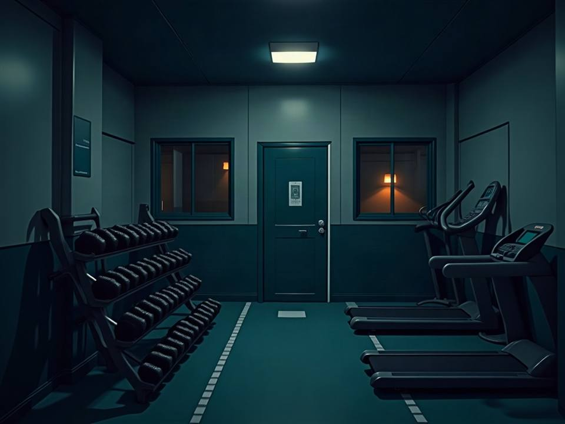

학관 3층 강의실. 눈을 뜨니 밤이다.
깜빡 잠이 든 줄 알았는데, 복도는 불이 꺼져 있고 창밖 운동장에는 느리게 움직이는 형체들이 있다.
폰은 배터리 9%, 신호 없음. 이 건물을 내려가 김수환관까지 가야 한다. 선택은 여덟 번, 큰 갈림길은 세 번.
A는 머무는 선택(0점), B는 움직이는 선택(1점). 여덟 번의 합으로 당신의 생존 유형이 정해집니다.
큰 선택
1/8
